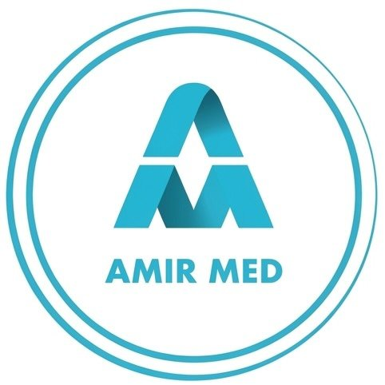
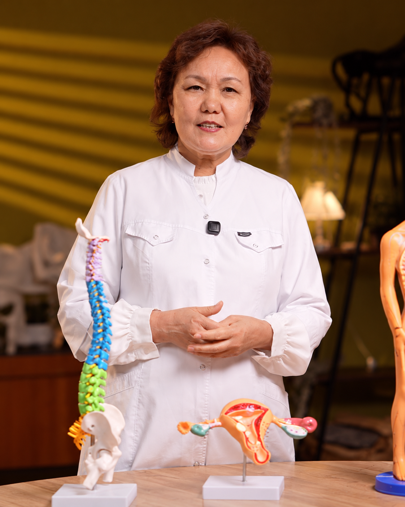

Тәсілдерді көрсету
Массаж тәсілдерінің орындалуын қадам-қадамымен бақылап, әр қозғалыстың мәнін талқылаймыз.

ҚатысуМАССАЖ МАМАНДАРЫНА АРНАЛҒАН
Қазақ тіліндегі тегін практикалық мастер-класс.
Массаж тәсілдерін көріп, жұмыс барысын
бірге талқылаймыз.

20 жылдан астам тәжірибе
AMIR MED сауықтыру орталығының негізін қалаушы
МАСТЕР-КЛАСС БАҒДАРЛАМАСЫ
Күнделікті жұмыста маңызды болатын тәсілдерге, қозғалысқа және маманның жұмыс логикасына назар аударамыз.
Массаж тәсілдерінің орындалуын қадам-қадамымен бақылап, әр қозғалыстың мәнін талқылаймыз.
Практикалық көрсетілім арқылы жұмыс ретін және тәсіл таңдаудың негізгі қағидаларын қарастырамыз.
Тақырып бойынша сұрақ қойып, өз тәжірибеңізде кездесетін жағдайларды талқылауға мүмкіндік.
КӘСІБИ ДАМУ
Мастер-класс — оқу тәсілімізбен танысуға мүмкіндік. Толық оқыту курстарының бағыттары төменде берілген.
Бел, мойын және иық ауырсынуы кезінде қысқа мерзімді жеңілдік беруі мүмкін. Жұмсақ тіндермен жұмыс істеуге бағытталған қосымша әдіс.
Іш аймағындағы тіндерге бағытталған қолмен жұмыс әдісі. Ішкі ағзалар ауруларына әсері зерттелгенімен, тиімділігі жөніндегі ғылыми дәлелдер жеткіліксіз.
Жамбас түбі бұлшықеттері шамадан тыс керілгенде, арнайы жамбас физиотерапиясындағы ішкі қолмен жұмыс кейде ауырсынуды жеңілдетуге көмектеседі.
Бел мен мойын ауырсынуын, тізе остеоартритіндегі ауырсынуды жеңілдетуге көмектесуі мүмкін. Мигрень мен кернеулік бас ауруының алдын алуда да қолданылуы мүмкін.
Ауырсынуды азайтуы мүмкін деген зерттеулер бар, бірақ дәлелдердің сапасы төмен. Нақты ауруды сенімді емдейді деп айтуға негіз жеткіліксіз.
Медициналық сүліктер реконструктивті хирургияда, мысалы қайта жалғанған немесе көшірілген тінде веналық қан іркілгенде қолданылады.
СІЗДІҢ СҰРАҚТАРЫҢЫЗ
Мастер-класс қазақ тілінде өтеді. Түсіндіру мен практикалық көрсетілім де қазақ тілінде жүргізіледі.
Мастер-класқа қатысу тегін. Орын саны шектеулі болғандықтан, WhatsApp арқылы алдын ала жазылыңыз.
Мастер-класс 2026 жылғы 10 қазанда, сағат 16:00-де өтеді. Өтетін орнын ұйымдастырушыдан нақтылаңыз.
Бұл — практикалық мастер-класс. Ол толық кәсіби оқыту курсын алмастырмайды. Сертификат туралы ақпаратты ұйымдастырушыдан нақтылаңыз.
ТЕГІН ПРАКТИКАЛЫҚ МАСТЕР-КЛАСС
Қазақ тіліндегі практикалық мастер-классқа тегін қатысыңыз.
Тегін
Орын саны шектеулі
Өтетін орнын ұйымдастырушыдан нақтылаңыз.